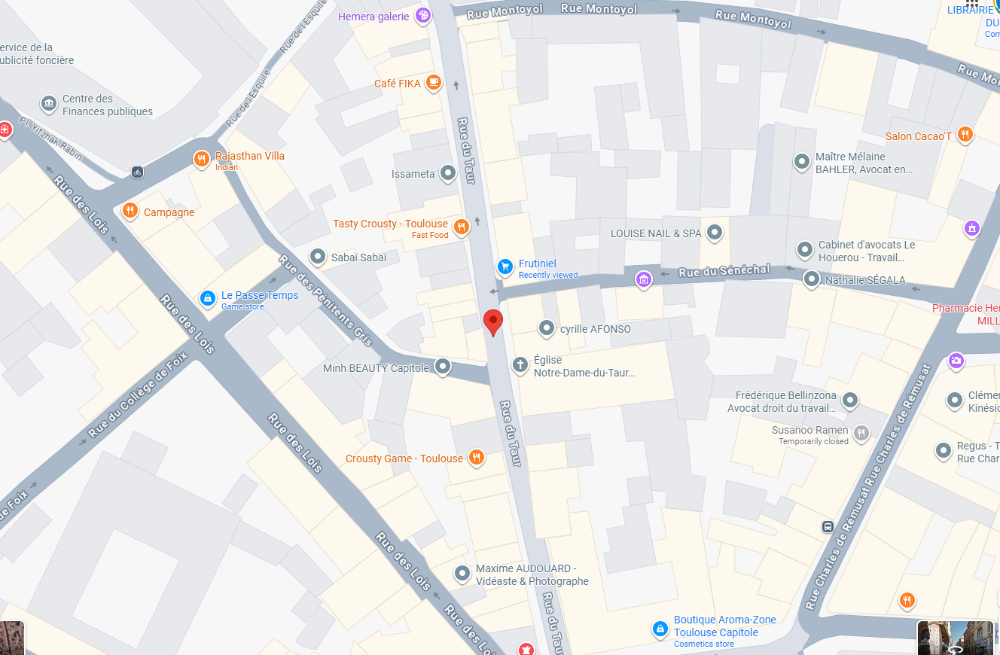

Le meilleur ramen japonais de Toulouse, en centre-ville.
Venez déguster notre ramen ou passez votre commande.

L'histoire de SUGOI Ramen : Passion et Tradition à Toulouse
SUGOI Ramen, c'est avant tout l'histoire d'une passion pour la street-food japonaise et le désir de partager une cuisine authentique en plein cœur du centre-ville de Toulouse. Dans notre restaurant, nous combinons le respect des traditions nippones avec la convivialité du Sud-Ouest pour vous offrir un lieu unique où il fait bon se retrouver entre amis ou en famille.
Le secret de nos bols ? Il réside dans la patience. Notre bouillon, véritable âme du ramen, mijote lentement pendant de longues heures pour libérer des saveurs riches et réconfortantes. Nous y plongeons chaque jour des nouilles fraîches, pétries et façonnées à la main dans notre cuisine. Cette exigence artisanale garantit à chaque invité un voyage gustatif mémorable, de la première à la dernière goutte de bouillon.
Curieux de savoir comment tout a commencé ? Découvrez l'histoire de notre recette familiale et les secrets de notre cuisine sur notre blog.